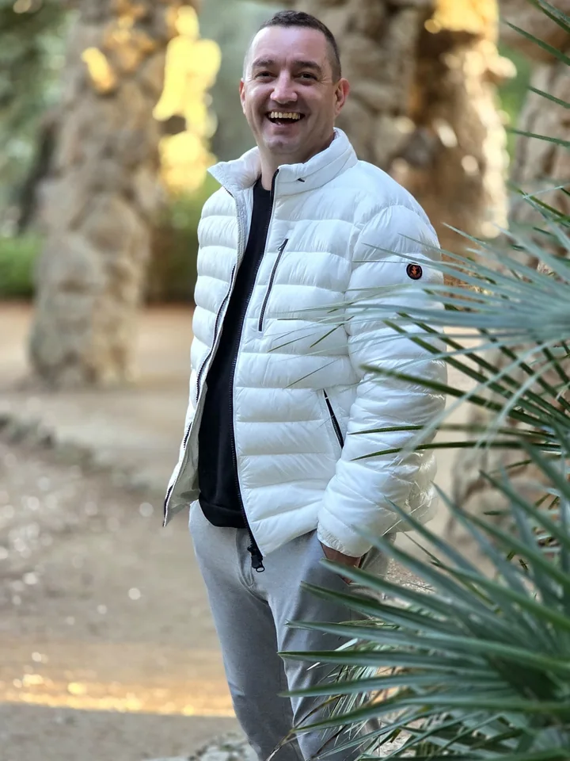

Centrum Architektury Ogrodowej · Mikowice pod Kłodzkiem
Kamień po kamieniu.
Kostka brukowa, płyty, palisady, ogrodzenia i kamień do ogrodu. Przyjedziemy, zmierzymy, dobierzemy wzór. A potem zostaje na pokolenia.
Robimy to, po czym chodzisz codziennie.
GardenBruk to Centrum Architektury Ogrodowej w Mikowicach, kilka minut od Kłodzka. Na naszym placu kostkę, płyty i kamień zobaczysz na żywo. Możesz ich dotknąć i porównać kolory w słońcu i w cieniu, zanim cokolwiek zamówisz.
Do wielu zleceń przyjeżdżamy sami: projektant mierzy na miejscu, a potem razem wybieramy materiał i wzór, który pasuje do domu.

„Polecam. Najlepsza jakość obsługi.”
Aleksander J., opinia na Facebooku
„Firma na wysokim poziomie :) Gwarantują profesjonalne doradztwo i szeroki wybór.”
Ania O.-G., opinia na Facebooku
Od pomiaru po ostatni kamień.
- Pomiar na miejscuProjektant przyjeżdża i mierzy. Od razu widać, ile materiału trzeba i gdzie będą spadki.
- Wybór na placuKostka, płyty, obrzeża, palisady i ogrodzenia stoją u nas. Wybierasz na oko, nie z ekranu.
- Wzór, który jest TwójJodełka, łuki, koła, a nawet kwiat w podjeździe. Pokażemy, co jest możliwe.
- Sprzęt na wynajemRobisz sam? U nas wypożyczysz zagęszczarkę i inny sprzęt specjalistyczny.
Wybierz wzór. Plac ułoży się na nowo.
Kwiat z jasnej kostki w grafitowym podjeździe. Takie wzory układamy pod Kłodzkiem, kamień po kamieniu.
Nasz plac w Mikowicach. Wszystko na miejscu.
Dodaj do zapytania, co Cię interesuje. Wyślesz je jednym kliknięciem na WhatsApp albo e-mailem, a my odpowiemy z dostępnością i ceną.
Tu brakuje kawałka drogi. Ułóż go sam.
Przeciągnij kamień na jego miejsce. Kostkę w jodełce obrócisz dotknięciem. Potem zasyp piasek i przejedź zagęszczarką.
Zrób zdjęcie podwórka. Zobacz je w kostce.
Wgraj zdjęcie podjazdu, tarasu albo ścieżki. Zaznacz cztery rogi, a planer ułoży w perspektywie kostkę, którą wybierzesz. Zdjęcie zostaje w Twoim telefonie, nic nie wysyłamy, dopóki sam nie zechcesz.
Robota, która broni się sama.
Kilka zleceń z ostatnich lat. Zdjęcia robimy sami, prosto z placu budowy.
Deweloperzy, architekci, gminy.
Większe ilości, terminy pod harmonogram budowy, doradztwo przy doborze materiału. Rozwijamy się i szukamy partnerów, z którymi zbudujemy więcej niż jeden podjazd.
- Osiedla i parkingi
- Place i chodniki
- Ogrody przy obiektach
- Ogrodzenia i murki
Droga prowadzi do nas.
Centrum Architektury Ogrodowej GardenBruk
Mikowice 16
57-300 Kłodzko
+48 500 250 936
biuro@gardenbruk.net